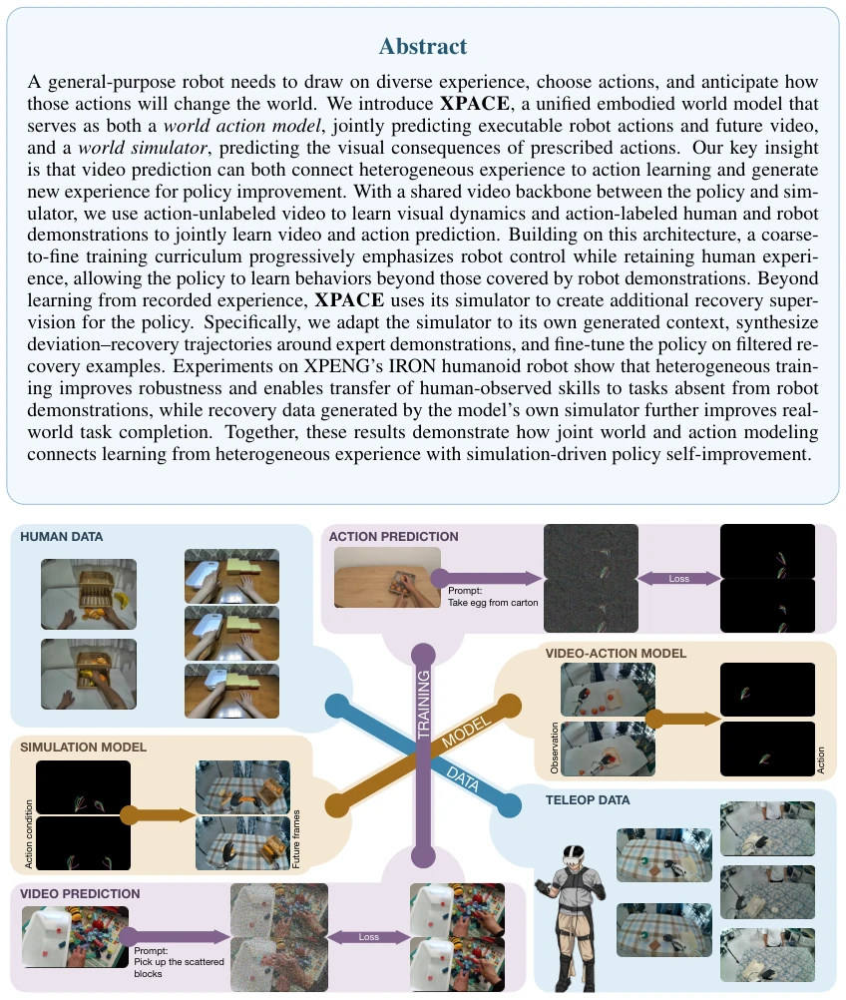
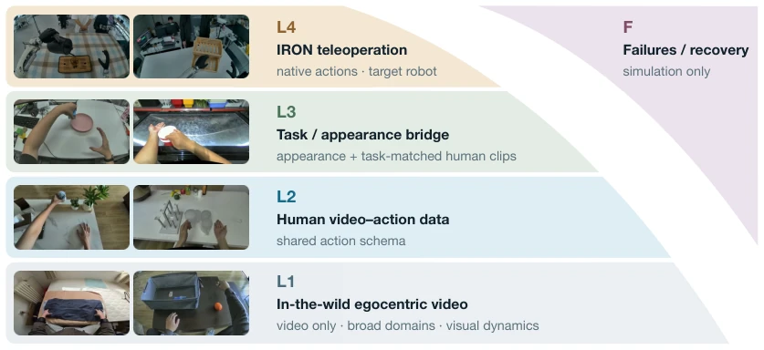
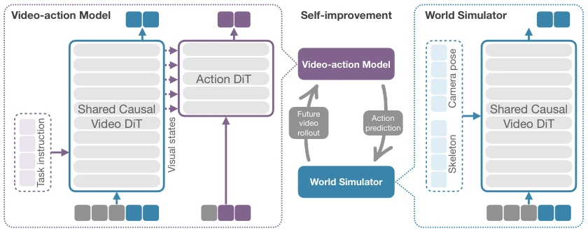
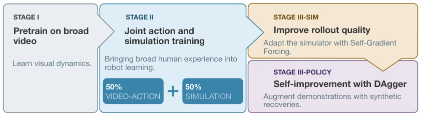
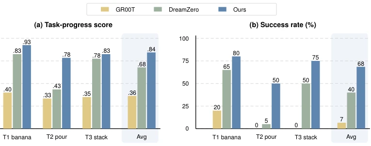
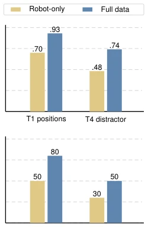
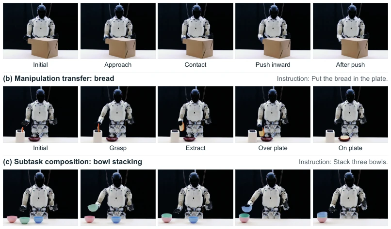
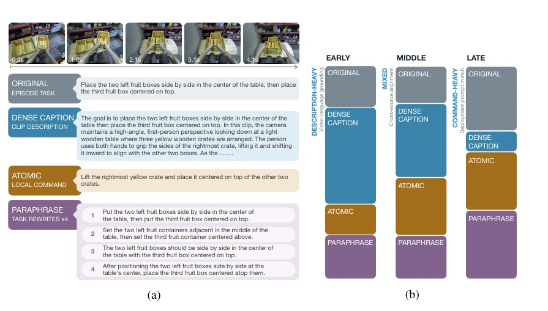
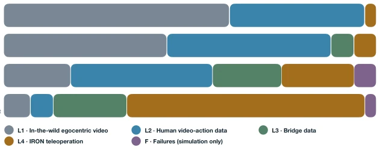
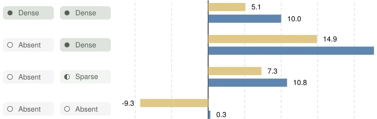

这篇来自小鹏机器人的 XPACE 试图在“世界模型”的浪潮中搞点实事，没止步于预测视频，而是把视频预测和动作预测捏在一起，还搞了个“自我修复”的闭环。亮点在于数据金字塔和自梯度强制（SGF）让模拟器能自己生成纠错数据，这比单纯靠真机试错省多了。但槽点也有：这种架构对算力要求肯定不低，而且“自我改进”听起来美好，实际部署中模拟器的偏差会不会导致策略学歪？毕竟模拟器生成的“恢复轨迹”要是质量不行，策略反而学得更差。不过能在人形机器人上跑通，确实比纯仿真强，至少证明了异构数据融合不是空谈，只是不知道真机部署时的延迟和稳定性如何，毕竟仿真和现实的鸿沟不是靠几个 Loss 就能填平的。
This XPACE from XPeng Robotics attempts to undertake substantive work amidst the wave of "world models", not stopping at video prediction but integrating video prediction and action prediction, and also establishing a "self-repair" closed loop. The highlight lies in the data pyramid and Self-Gradient Forcing (SGF) enabling the simulator to generate correction data itself, which saves significantly more than relying solely on real-machine trial and error. However, there are also drawbacks: this architecture definitely requires substantial compute power, and while "self-improvement" sounds appealing, in actual deployment, will simulator deviations cause the policy to learn incorrectly? After all, if the quality of "recovery trajectories" generated by the simulator is poor, the policy might learn even worse. However, running successfully on humanoid robots is indeed superior to pure simulation, at least proving that heterogeneous data fusion is not empty talk, it is just unknown how latency and stability are during real-machine deployment, after all, the gap between simulation and reality cannot be bridged by just a few Losses.
General embodied intelligence requires utilizing diverse experiences (human observation + robot manipulation) to predict action consequences and self-improve. Existing work faces three problems: (Q1) How to fuse heterogeneous experiences? Human videos lack action labels, and robot data collection costs are high [7, 8]. (Q2) How to unify action generation and simulation? Simple joint prediction is insufficient to establish a skill acquisition path [5, 6]. (Q3) How to utilize simulation for self-improvement? Existing imitation learning lacks corrective supervision when deviating from trajectories [9]. XPACE aims to solve these by connecting heterogeneous data through a shared video backbone and utilizing the simulator to generate recovery data to compensate for the deficiencies of real demonstrations, achieving self-improvement from recording experience to simulation-driven enhancement. This solves the pain point that human experience is difficult to directly convert into robot control instructions, allowing the model not only to "see" but also to "think" and "do".
方法Method
整体流程分为数据构建、模型架构、训练范式与后训练四个阶段。数据上构建四层金字塔：L1 无标签视频学视觉动态，L2 人类动作数据，L3 桥接数据对齐人机，L4 机器人遥操作，F 集用于仿真训练。模型采用非对称 MoT 架构，共享视频 Transformer 骨干，动作 Transformer 读取视觉特征预测动作，支持策略模式（预测动作 + 视频）和仿真模式（给定动作预测视频）。训练分三阶段：Stage I 视频预训练；Stage II 粗到细联合训练，逐步增加机器人数据权重；Stage III 后训练，先通过自梯度强制（SGF）适应自生成上下文，再用模拟器合成偏离 - 恢复轨迹，经筛选后对策略进行 DAgger 风格微调。关键创新在于用模拟器生成的合成恢复数据增强策略，而非仅依赖真实演示，这有效缓解了分布偏移问题。
The overall process is divided into four stages: data construction, model architecture, training paradigm, and post-training. On the data side, a four-layer pyramid is constructed: L1 unlabeled video learns visual dynamics, L2 human action data, L3 bridging data aligns human-robot, L4 robot teleoperation, and the F set is used for simulation training. The model adopts an asymmetric MoT architecture with a shared video Transformer backbone; the action Transformer reads visual features to predict actions, supporting policy mode (predict action + video) and simulation mode (given action predict video). Training is divided into three stages: Stage I video pre-training; Stage II coarse-to-fine joint training, gradually increasing robot data weight; Stage III post-training, first adapting to self-generated context via Self-Gradient Forcing (SGF), then using the simulator to synthesize deviated-recovery trajectories, and after filtering, performing DAgger-style fine-tuning on the policy. The key innovation lies in using synthetic recovery data generated by the simulator to enhance the policy, rather than relying solely on real demonstrations, which effectively alleviates the distribution shift problem.

Figure 1: XPACE is a unified embodied world model, serving as both a world action model, jointly predicting executable actions and future video from observations, current state, and task instructions, and a world simulator, predicting future video from history, prescribed skeleton controls, and camera poses. The model learns jointly from human video and robot demonstrations, with human bridge data supporting cross-embodiment alignment. Recovery trajectories generated by the learned world simulator enable policy self-improvement through DAgger fine-tuning.

Figure 2: Data pyramid for XPACE. The corpus comprises (L1) in-the-wild egocentric video, (L2) human video–action data, (L3) task- and appearance-aligned bridge data, and (L4) IRON teleoperation. Failure and recovery data (F) train simulation only.

Figure 4: MoT architecture, operating modes, and self-improvement of XPACE. The asymmetric mixture-of-transformers (MoT) couples a causal video Transformer with an action Transformer through multi-level video-to-action feature connections. Left: In video–action mode, visual history, the current state, and a task instruction condition the joint prediction of future video and executable action chunks. Right: In simulation mode, the shared video Transformer predicts future video from visual history, pre- scribed skeleton controls, and camera poses. Center: Simulation connects action sequences to their visual consequences, enabling simulation-driven policy self-improvement. After adaptation with self-gradient forcing, the simulator generates deviation–recovery trajectories that are filtered an

Figure 5: Training stages and policy self-improvement of XPACE. Stage I trains video prediction; Stage II adds the action branch and jointly trains policy and simulation modes with a coarse-to-fine data curriculum. Stage III-sim and Stage III-policy initialize separate copies of the Phase II-c checkpoint, updating only simulation and policy, respectively. Stage III-sim adapts the simulator to self-generated context, while the unchanged Phase II-c policy serves as the Before DAgger baseline. The connection from Stage III-sim to Stage III-policy represents synthetic recovery data, not checkpoint initialization; the SGF simulator remains fixed during policy fine-tuning.
Validated on the XPENG IRON humanoid robot, including 3 tasks (including OOD tasks). Metrics include Task-progress score and Success rate. Results show that XPACE outperforms baselines on all tasks, and human data can improve generalization ability on unseen tasks (Figure 9). Ablation experiments indicate that mixed human data is more robust than pure robot data (Figure 8). Additionally, after fine-tuning with simulator-generated recovery data, the real task completion rate further improves, proving that simulation-driven self-improvement is effective. Experiments also demonstrate skill transfer from human observation to robot execution, validating the effectiveness of heterogeneous data fusion.

Figure 7: Real-robot policy evaluation (measured): (a) task-progress score and (b) success rate on the three-task suite (ID: Tasks 1–2; task-level OOD: Task 3), 20 trials per task per method. XPACE leads on every task under both metrics. Progress credits intermediate milestones, while success requires complet- ing the entire manipulation.

Figure 8: Closed-loop human-data ablation. (a) Task-progress score and (b) success rate for the robot-only and full-data models on posi- tion and distractor robustness, with 20 trials per task.

Figure 9: Real-robot transfer from human experience (qualitative). Each row shows five keyframes of XPACE following the displayed instruction. (a) Drawer pushing illustrates approach and contact with an object absent from robot training data. (b) Bread transfer adapts manipulation of an object present in both human and robot data to a toaster-to-plate task absent from robot demonstrations. (c) Three-bowl stacking composes two successive placements under a single task instruction. These examples illustrate a progression from object approach to manipulation transfer and sequential subtask composition.
其他图片Other Figures

Figure 3: Multi-level language conditioning and caption sampling. (a) Each training clip is associated with an original task instruction, a dense description, an atomic action command, and task paraphrases, covering the overall objective, local actions, and alternative wording. (b) Training samples one text con- dition per example, with the mixture shifting from dense descriptions toward task instructions to match deployment inputs.

Figure 6: Source-mixture curriculum through Stages I and II. Segment widths indicate configured sampling weights; exact values are omitted. Stage I uses the participating sources as video-only data. Across Stage II, broad L1/L2 data are reduced while L3 bridge and L4 robot data gain weight, with target- robot data dominant in II-c. F enters in II-b through simulation updates only. These source proportions are distinct from the fixed 50/50 sampling of video–action and simulation modes.

Figure 11: Human-to-robot transfer across training-data coverage. Relative reduction in held-out ac- tion loss against robot-only, averaged over nine late-training checkpoints. Positive values indicate lower loss; negative values indicate higher loss. Coverage refers to the corresponding task family in each train- ing source.